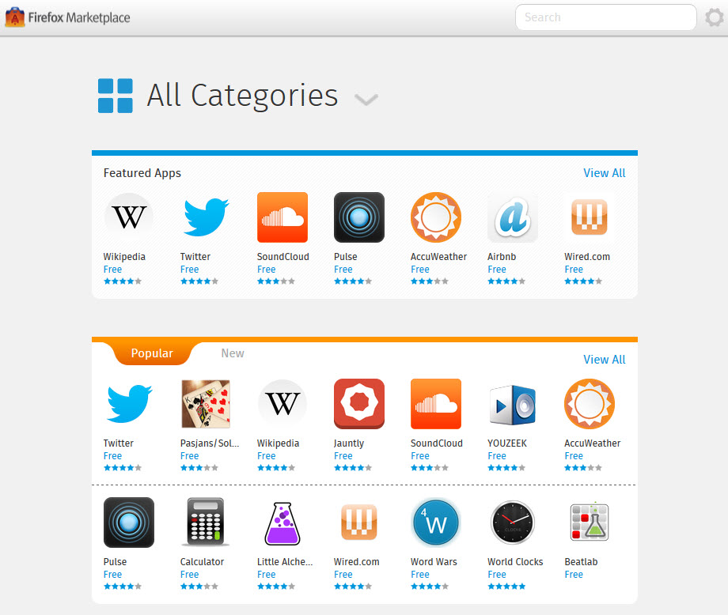

你是熱血的 Firefox OS 開發者，而且早已設計了許多 App 準備大展身手嗎？在將自己的 App 提交到 Firefox Marketplace 之後，如果要更新自己的作品又該怎麼辦呢？先來這裡看看該如何更新 Marketplace 中的 App，讓自己的開發作業更順利。

更新托管式 (Hosted) App
托管式 App 本質就是網頁，因此同樣依 Web 快取的常規而運作。但開發者亦可選用如 HTML5 AppCache 的進階機制以加快啟動速度。先了解這二點之後，更新 App 所使用的一般資源大概就沒有需要特別注意的地方了。
但 Open Web App 在處理 manifest 檔案時就不太一樣了。某些 manifest 的變動必須經過使用者許可。但根據 Web runtime 實作的不同，較難以確定是否會啟動更新作業。
如果要能確實解決此問題，開發者可於 manifest 檔案中添加「version」欄位。只要檢查 navigator.mozApps.getInstalled() 函式所回傳的值，即可了解目前的版本。如果消費者並未安裝最新版本，則可透過 navigator.mozApps.install() 觸發更新作業。
Web runtime 並不會使用 version 的值，所以開發者可使用任何喜歡的版號設定格式。
另請注意，如果因更改 manifest 檔案而發生錯誤或毀損，則一旦將 manifest 檔案提交到 Firefox Marketplace 就會發現。嚴重錯誤將導致 App 無法出現在 Marketplace 之中。若是較不嚴重的錯誤，就可能會自動標定該 App 需要重新審查。
更新封裝式 (Packaged) App
封裝式 App 與托管式 App 的更新程序有所不同。在更新封裝式 App 時，開發者必須將 App 的新版 zip 檔案上傳至 Firefox Marketplace。更新過的 App 同樣要先通過審查，才能再發佈至 Marketplace 之上。如此將於 Firefox OS 手機上觸發更新作業。消費者亦可透過「Settings」App 要求進行更新。
若想進一步了解封裝式 App 的更新程序，可參閱下一章節。
更新封裝式 App 相關細節
接著提供封裝式 App 更新時的相關細節。如果你打算建構 App 商城，就可能必須特別注意。
- 將更新過的封裝式 App 發佈之後，亦應更新 mini-manifest 以指向更新過的 ZIP 檔案 (請注意 mini-manifest 並非 App 的主要 manifest 檔案)。 ETag 標頭亦將變更，且將觸發 Firefox OS 手機上的更新作業。
- 搭載於手機上的 Firefox OS 將每天一次，檢查 App 是否更新。Firefox OS 將檢查 mini-manifest 的網址，再檢查 mini-manifest 之內 package_path 的網址。只要使用 App 物件上的 checkForUpdate() 函式即可進行此作業。一旦 ETag 標頭改變，該函式隨即得知 App 更新過，並將檢查 ZIP 檔案是否變更。
- Firefox OS 將批次檢查 App 的更新檔案。
Mozilla 開發者社群網站 (MDN) 原文連結：Updating apps
你也可參閱中文版《更新 App》；並參閱 MDN 上的更多 Firefox OS 或 Marketplace 相關文章。